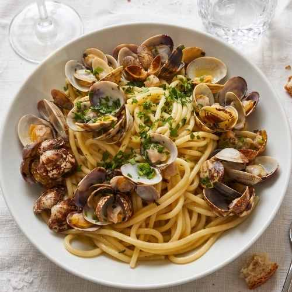
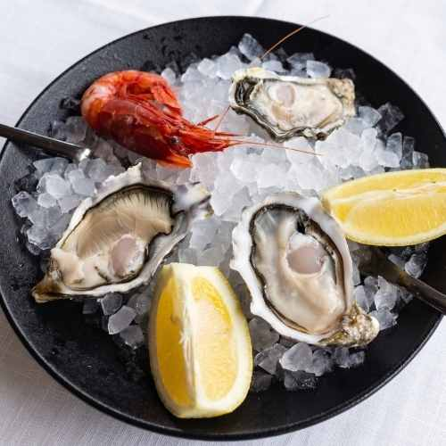
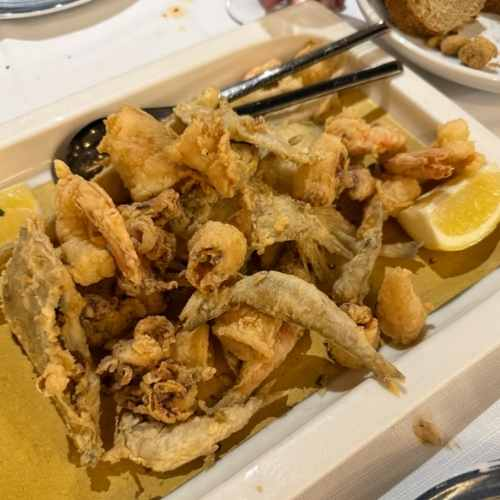
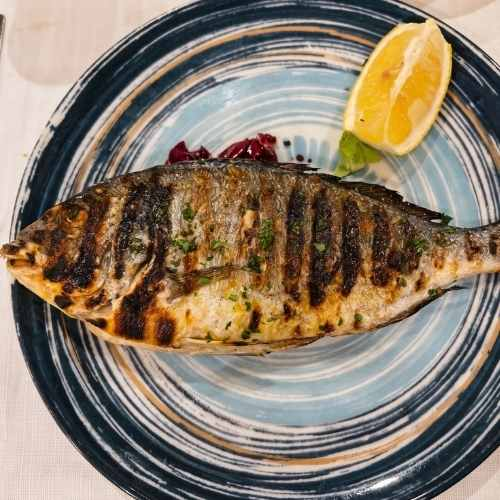
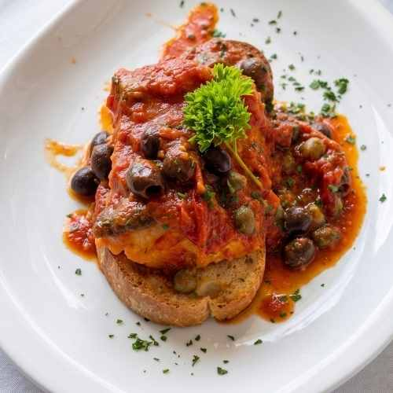
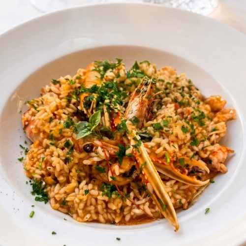

Bakkalà · Bologna
Un menù che cambia con le stagioni e con il pescato del giorno. Dai grandi classici della cucina di mare alle proposte più creative dello chef.






Il percorso gastronomico di Bakkalà inizia con una selezione di antipasti freddi di pesce che raccontano la qualità della materia prima:
Per chi preferisce iniziare con qualcosa di caldo, i nostri antipasti caldi di pesce sono preparati al momento:
I nostri primi piatti di pesce sono il cuore del menù Bakkalà. Paste di qualità con ingredienti selezionati e cotture precise:
Per i secondi, proponiamo pesce fresco al peso e piatti della tradizione:
Il piatto simbolo del ristorante, proposto in quattro preparazioni:
Scarica il menù completo o la nostra carta vini.
Prenota il tuo tavolo e lasciati conquistare dal sapore autentico del mare a Bologna.